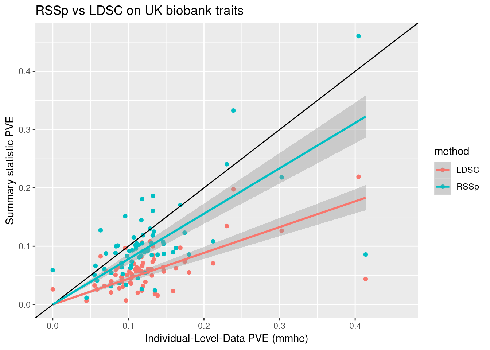

Last updated: 2018-12-05
workflowr checks: (Click a bullet for more information) ✔ R Markdown file: up-to-date
Great! Since the R Markdown file has been committed to the Git repository, you know the exact version of the code that produced these results.
✔ Environment: empty
Great job! The global environment was empty. Objects defined in the global environment can affect the analysis in your R Markdown file in unknown ways. For reproduciblity it’s best to always run the code in an empty environment.
✔ Seed:
set.seed(12345)
The command set.seed(12345) was run prior to running the code in the R Markdown file. Setting a seed ensures that any results that rely on randomness, e.g. subsampling or permutations, are reproducible.
✔ Session information: recorded
Great job! Recording the operating system, R version, and package versions is critical for reproducibility.
✔ Repository version: 959358a
wflow_publish or wflow_git_commit). workflowr only checks the R Markdown file, but you know if there are other scripts or data files that it depends on. Below is the status of the Git repository when the results were generated:
Ignored files:
Ignored: .RData
Ignored: .Rhistory
Ignored: .Rproj.user/
Ignored: .httr-oauth
Ignored: analysis/PolygenicEstimation_cache/
Ignored: code/.Rhistory
Ignored: code/scripts/.Rhistory
Ignored: code/snakemake_files/.Rhistory
Ignored: code/snakemake_files/.snakemake/
Ignored: code/snakemake_files/parameter_generation/
Ignored: code/snakemake_files/subset_data_pipeline/.RData
Ignored: data/rep_polygenic/
Untracked files:
Untracked: _workflowr.yml
Untracked: analysis/#Exp_Heritability.Rmd#
Untracked: analysis/#RSSp_WTCC_noConfounding.Rmd#
Untracked: analysis/AFvsp.Rmd
Untracked: analysis/ChunkingEffect.Rmd
Untracked: analysis/ChunkingLD.Rmd
Untracked: analysis/DownSamplingResults.Rmd
Untracked: analysis/EVD_SVD.Rmd
Untracked: analysis/GRM_estimation.Rmd
Untracked: analysis/GenomeWideSimulation.Rmd
Untracked: analysis/Heritability.Rmd
Untracked: analysis/LDshrink_effect.Rmd
Untracked: analysis/MeetingSummary1.Rmd
Untracked: analysis/Normalization.Rmd
Untracked: analysis/RSSR_PolygenicData.Rmd
Untracked: analysis/RSSp.stan
Untracked: analysis/RSSp2.stan
Untracked: analysis/RSSp_LDshrink.Rmd
Untracked: analysis/RSSp_Large_WTCC_noConfounding.Rmd
Untracked: analysis/RSSp_Largest_Simulation.Rmd
Untracked: analysis/RSSp_WTCC_noConfounding.Rmd
Untracked: analysis/RSSp_ldsc_highPVE_chr1.Rmd
Untracked: analysis/RSSp_ldsc_highPVE_hr.Rmd
Untracked: analysis/RSSp_ldsc_noConfounding.Rmd
Untracked: analysis/Running_ldetect.Rmd
Untracked: analysis/SPVE.Rmd
Untracked: analysis/SharedSNPAnalysis (dell-desktop's conflicted copy 2018-09-04).Rmd
Untracked: analysis/SharedSNPAnalysis.Rmd
Untracked: analysis/Summary.Rmd
Untracked: analysis/Summary.org
Untracked: analysis/Vanilla_LDSC.Rmd
Untracked: analysis/chr_16.Rmd
Untracked: analysis/derby.log
Untracked: analysis/eQTL_Pipelines.Rmd
Untracked: analysis/fquh_mod.RDS
Untracked: analysis/importFramExp.Rmd
Untracked: analysis/ltximg/
Untracked: analysis/nquh_mod.RDS
Untracked: analysis/out_res.RDS
Untracked: analysis/pvv_opt.Rmd
Untracked: analysis/quh_mod.RDS
Untracked: analysis/scz_data.org
Untracked: analysis/shrinkage_effect.Rmd
Untracked: code/#scikit_allel.org#
Untracked: code/.ipynb_checkpoints/
Untracked: code/RSSp_abstract.org
Untracked: code/RSSp_abstract_notes.org
Untracked: code/RSSp_talk_notes.org
Untracked: code/RSSp_talk_notes.pdf
Untracked: code/RSSp_talk_notes.tex
Untracked: code/Untitled.ipynb
Untracked: code/Untitled1.ipynb
Untracked: code/ideas.org
Untracked: code/ltximg/
Untracked: code/quhdypi/
Untracked: code/rssp.yml
Untracked: code/scikit_allel.org
Untracked: code/scripts/#compare_eqtl.R#
Untracked: code/scripts/RSSp_ldsc_results.Rmd
Untracked: code/scripts/bin/
Untracked: code/scripts/ldsc_rssp.Rmd
Untracked: code/scripts/matlab2h5.py
Untracked: code/scripts/vcf-liftover.sh
Untracked: code/scripts/vcf2allel.py
Untracked: code/skl_vf.ipynb
Untracked: code/snakemake_files/#LD_snakefile#
Untracked: code/snakemake_files/#kg_snakefile#
Untracked: code/snakemake_files/EUR.samples
Untracked: code/snakemake_files/environment_rssp.yml
Untracked: code/snakemake_files/eqtl_check.RDS
Untracked: code/snakemake_files/kg_snakefile~
Untracked: code/snakemake_files/ldsc/
Untracked: code/snakemake_files/plink.log
Untracked: code/snakemake_files/rssp_ldsc_report/
Untracked: code/snakemake_files/temp_map_19.RDS
Untracked: code/snakemake_files/temp_target_19.RDS
Untracked: code/snakemake_files/vert.txt
Untracked: code/snakemake_files/vgcore.30188
Untracked: code/t_scripts/
Untracked: code/test_py.py
Untracked: code/workflow_params.json~
Untracked: data/NCBI34_to_GRCh38.chain.gz
Untracked: data/SNP_ws.RData
Untracked: data/Snakemake_inputs/
Untracked: data/all_df.RDS
Untracked: data/ntr_results.RData
Untracked: data/temp_ws.RData
Untracked: docs/#RSSp_WTCC_noConfounding.Rmd#
Untracked: docs/RSSp.stan
Untracked: docs/RSSp2.stan
Untracked: docs/Summary.org
Untracked: docs/derby.log
Untracked: docs/figure/LDshrink_effect.Rmd/
Untracked: docs/figure/RSSp_Large_WTCC_noConfounding.Rmd/
Untracked: docs/figure/RSSp_WTCC_noConfounding.Rmd/
Untracked: docs/figure/RSSp_ldsc_highPVE_chr1.Rmd/
Untracked: docs/figure/RSSp_ldsc_highPVE_hr.Rmd/
Untracked: docs/figure/SharedSNPAnalysis.Rmd/
Untracked: docs/fquh_mod.RDS
Untracked: docs/log4j.spark.log
Untracked: docs/ltximg/
Untracked: docs/nquh_mod.RDS
Untracked: docs/quh_mod.RDS
Untracked: docs/scz_data.org
Untracked: dosage.scan.RData
Untracked: dosage.snp.RData
Untracked: output/RSSp_snakemake/
Untracked: output/pve/
Unstaged changes:
Modified: .gitignore
Modified: PolygenicRSS.Rproj
Modified: analysis/DownsamplingResults2.Rmd
Modified: analysis/Exp_Heritability.Rmd
Modified: analysis/IndependenceCheck.Rmd
Modified: analysis/Meeting_Notes.Rmd
Modified: analysis/New_WholeGenome.Rmd
Modified: analysis/OutOfSampleLD.Rmd
Modified: analysis/OutOfSampleLD_smallPVE.Rmd
Modified: analysis/PolygenicEstimation.Rmd
Modified: analysis/RSSP_standard_error.Rmd
Modified: analysis/RSSp_Chunksize_Investigation.Rmd
Modified: analysis/RSSp_Large_Simulation.Rmd
Modified: analysis/RSSp_Posterior.Rmd
Modified: analysis/RSSp_Prediction.Rmd
Modified: analysis/RSSp_ldsc.Rmd
Modified: analysis/RSSp_ldsc_gwas_direct_noConfounding.Rmd
Modified: analysis/RSSp_ldsc_highPVE.Rmd
Modified: analysis/SimulationPipeline.Rmd
Modified: analysis/_site.yml
Modified: analysis/about.Rmd
Modified: analysis/chr_2.Rmd
Deleted: analysis/chunks.R
Modified: analysis/index.Rmd
Modified: analysis/license.Rmd
Modified: analysis/lnzDist.Rmd
Modified: analysis/simulatingGWAS.Rmd
Modified: analysis/simulation.Rmd
Modified: code/TF_LDshrink.ipynb
Modified: code/dask_LDshrink.ipynb
Modified: code/snakemake_files/kg_ld_snakefile
Modified: code/workflow_params_desktop.json
Modified: code/workflow_params_xps.json
| File | Version | Author | Date | Message |
|---|---|---|---|---|
| Rmd | 959358a | CreRecombinase | 2018-12-05 | wflow_publish(“analysis/ukb_pve.Rmd”) |
| html | 423c992 | CreRecombinase | 2018-11-20 | Build site. |
| Rmd | 4eb91d1 | CreRecombinase | 2018-11-20 | wflow_publish(“analysis/ukb_pve.Rmd”) |
| html | 2d8ee94 | CreRecombinase | 2018-11-14 | Build site. |
| Rmd | 244e5da | CreRecombinase | 2018-11-14 | wflow_publish(“ukb_pve.Rmd”) |
Below are pve estimates from 69 uk biobank traits for which I could easily obtain: 1) GWAS summary statistics (from BoltLMM) 2) LD score regression heritability estimates 3) Individual-level-data based heritability estimates (from mmhe, described here)
I ran RSSp for each of these 69 traits (using Xiang’s new method for calculating pve). First we see the summary based heritability estimates (y axis) versus individual level estimate (x-axis).

If we treat the individual-level estimates as “truth”, RSSp has lower “error” on average.
sessionInfo()R version 3.5.1 (2018-07-02)
Platform: x86_64-pc-linux-gnu (64-bit)
Running under: Manjaro Linux
Matrix products: default
BLAS/LAPACK: /opt/intel/compilers_and_libraries_2018.1.163/linux/mkl/lib/intel64_lin/libmkl_gf_lp64.so
locale:
[1] LC_CTYPE=en_US.UTF-8 LC_NUMERIC=C
[3] LC_TIME=en_US.UTF-8 LC_COLLATE=en_US.UTF-8
[5] LC_MONETARY=en_US.UTF-8 LC_MESSAGES=en_US.UTF-8
[7] LC_PAPER=en_US.UTF-8 LC_NAME=C
[9] LC_ADDRESS=C LC_TELEPHONE=C
[11] LC_MEASUREMENT=en_US.UTF-8 LC_IDENTIFICATION=C
attached base packages:
[1] stats graphics grDevices utils datasets methods base
other attached packages:
[1] bindrcpp_0.2.2 fs_1.2.6 forcats_0.3.0 stringr_1.3.1
[5] dplyr_0.7.7 purrr_0.2.5 readr_1.1.1 tidyr_0.8.2
[9] tibble_1.4.2 tidyverse_1.2.1 plotly_4.8.0 ggplot2_3.1.0
loaded via a namespace (and not attached):
[1] tidyselect_0.2.5 haven_1.1.2 lattice_0.20-35
[4] colorspace_1.3-2 htmltools_0.3.6 viridisLite_0.3.0
[7] yaml_2.2.0 rlang_0.3.0.1 R.oo_1.22.0
[10] pillar_1.3.0 glue_1.3.0 withr_2.1.2
[13] R.utils_2.7.0 modelr_0.1.2 readxl_1.1.0
[16] bindr_0.1.1 plyr_1.8.4 munsell_0.5.0
[19] gtable_0.2.0 workflowr_1.1.1 cellranger_1.1.0
[22] rvest_0.3.2 R.methodsS3_1.7.1 htmlwidgets_1.3
[25] evaluate_0.12 labeling_0.3 knitr_1.20
[28] broom_0.5.0 Rcpp_1.0.0 scales_1.0.0
[31] backports_1.1.2 jsonlite_1.5 hms_0.4.2
[34] digest_0.6.18 stringi_1.2.4 grid_3.5.1
[37] rprojroot_1.3-2 cli_1.0.1 tools_3.5.1
[40] magrittr_1.5 lazyeval_0.2.1 crayon_1.3.4
[43] whisker_0.3-2 pkgconfig_2.0.2 xml2_1.2.0
[46] data.table_1.11.8 lubridate_1.7.4 rstudioapi_0.8
[49] assertthat_0.2.0 rmarkdown_1.10 httr_1.3.1
[52] R6_2.3.0 nlme_3.1-137 git2r_0.23.0
[55] compiler_3.5.1
This reproducible R Markdown analysis was created with workflowr 1.1.1